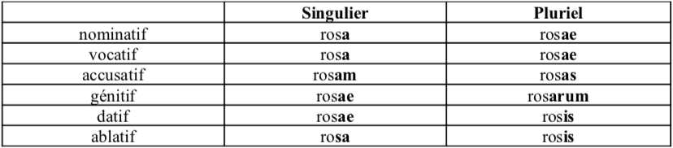
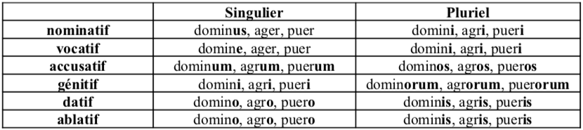
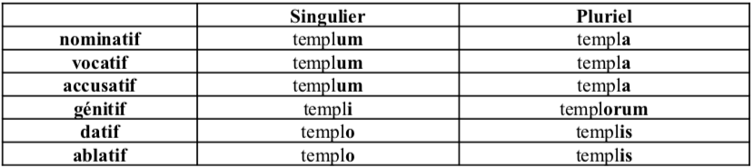
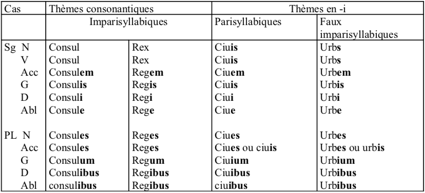
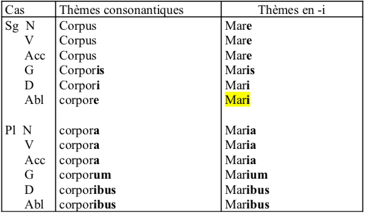
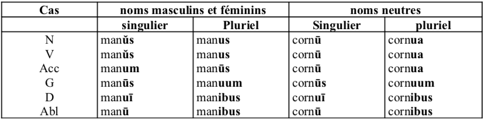
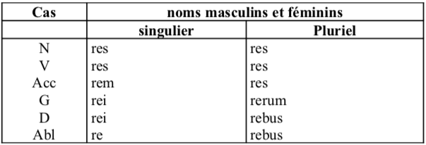
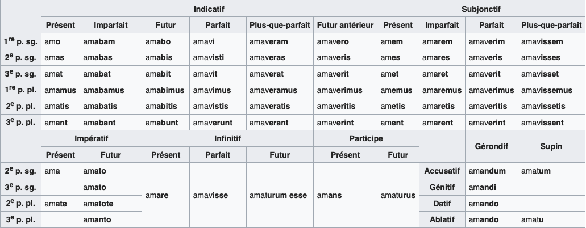
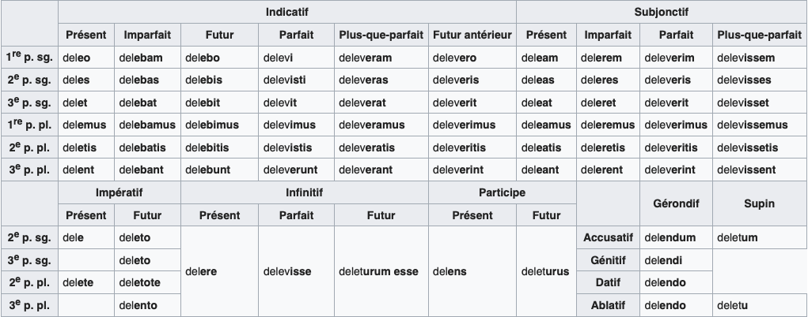
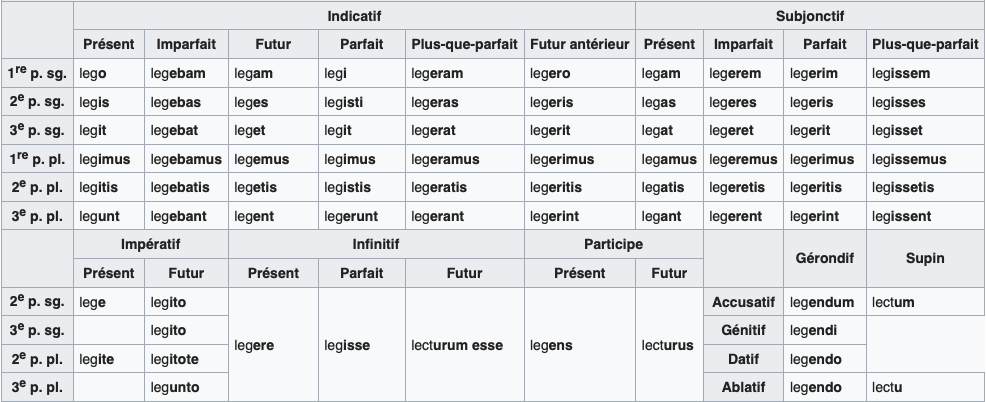

Cas
Nominatif : sujet, attribut du sujet
Vocatif : apostrophe
Accusatif : COD
Génitif : complément du nom
Datif : COI, COS, complément d'attribution
Ablatif : compléments circonstantiels
Déclinaisons
1ère déclinaison : génitif singulier en -ae
2ème déclinaison : génitif singulier en -i
3ème déclinaison : génitif singulier en -is
4ème déclinaison : génitif singulier en -us
5ème déclinaison : génitif singulier en -ei
On écrit un mot dans le dictionnaire : puella, ae, f : la jeune fille (nominatif sing, génitif sing, genre)
1ère déclinaison

2ème déclinaison masculin/féminin

2ème déclinaison neutre

3ème déclinaison masculin/féminin

3ème déclinaison neutre

4ème déclinaison

5ème déclinaison

Temps primitifs
1ère forme : Indicatif présent actif, 1ère personne du sing
2ème forme : Indicatif présent actif, 2ème personne du sing
3ème forme : Infinitif présent actif
4ème forme : Indicatif parfait actif
5ème forme : Supin
Exemple : habeo, -es, -ere, -ui, -itum : avoir ou troqueo, es, ere, torsi, torsum : tordre
Il existe six temps :
Temps de l'infectum : présent, imparfait, futur.
Temps du perfectum : parfait, plus que parfait, futur antérieur.
Supin : son radical permet de former le participe passé et le participe futur.
1ère conjugaison
verbes à thème en -a
modèle : amo, amas, amare, amaui, amatum : aimer
thème de l'infectum = radical du présent : ama-
thème du perfectum : amau-
2ème conjugaison
verbes à thème en -e
modèle : deleo, deles, delere, deleui, deletum : détruire
thème de l'infectum = radical du présent : dele-
thème du perfectum : deleu-
3ème conjugaison
verbes à thème en -e
modèle : lego, legis, legere, legi, lectum : lire
thème de l'infectum : lege-
radical du présent : leg-
thème du perfectum : leg-
3ème conjugaison mixte
verbes à thème en -i
modèle : capio, capis, capere, cepi, captum : prendre
thème de l'infectum : capi-
radical du présent : cap-
thème du perfectum : cep-
4ème conjugaison
verbes à thème en -i
modèle : audio, audis, audire, audiui, auditum : entendre
thème de l'infectum = radical du présent : audi-
thème du perfectum : audiu-
Il existe trois voix : l'actif, le passif et les verbes déponents qui ont une forme passive mais un sens actif.
Pour conjuguer, il faut ajouter les désinences (propres à la personne et àa la voix) au thème de l'infectum ou du perfectum. Dans certains temps elles sont précédées de suffixes caractéristiques du temps ou du mode.
1ère conjugaison - Voix active

2ème conjugaison - Voix active

3ème conjugaison - Voix active

Amicitia aliarum satietates vetulis debent rerum multos num amicitia digni munus satietates digni quae equis.
Référence de la citation
2019-05 : Constituendi autem sunt qui sint in amicitia fines et quasi termini diligendi. De quibus tres video sententias ferri, quarum nullam probo, unam, ut eodem modo erga amicum adfecti simus, quo erga nosmet ipsos, alteram, ut nostra in amicos benevolentia illorum erga nos benevolentiae pariter aequaliterque respondeat, tertiam, ut, quanti quisque se ipse facit, tanti fiat ab amicis.
Retour à l'accueil des fiches philo
Retour à l'accueil général